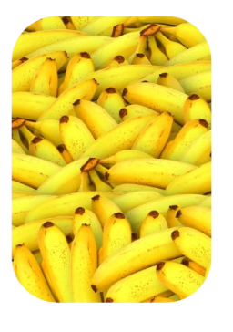
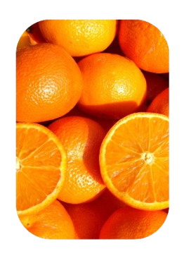

ESPECIALISTA EM NUTRIÇÃO: MARCELA BLANCO
A especialista em nutrição, Marcela Blanco mostra opções de utilização das cascas de frutas e legumes
BENEFÍCIOS DAS CASCAS UTILIZADAS EM NOSSAS RECEITAS
Benefícios da banana e sua casca
- Nutrientes essenciais como potássio e fibras;
- Auxílio na digestão e redução do colesterol;
- Uso na pele para aliviar irritações;
- Polimento de sapatos;
- Adubo orgânico para plantas;
- Repelente de pragas;
- Tratamento para rugas;
- Fonte de antioxidantes;
- Absorção de odores desagradáveis;
- Alívio de queimaduras.

Benefícios da maça e sua casca
- Fibras dietéticas para a digestão e saciedade.
- Antioxidantes que protegem as células.
- Redução do risco de doenças cardiovasculares e câncer.
- Controle de peso e estabilização do açúcar no sangue.
- Melhora da saúde da pele.
- Redução do colesterol LDL.
- Nutrientes essenciais como vitaminas e minerais.
- Promoção de uma microbiota intestinal saudável.
- Adição de sabor e textura a pratos.

Benefícios da laranja e sua casca
- Nutrientes essenciais, como vitamina C e fibras.
- Auxílio na digestão e prevenção da constipação.
- Antioxidantes que protegem as células.
- Potencial redutor do colesterol.
- Regulação da pressão arterial devido ao potássio.
- Uso como aromatizante em pratos e bebidas.
- Chá de casca de laranja para relaxamento.
- Repelente natural de insetos.
- Utilização em produtos de limpeza naturais.
- Contribuição para evitar o desperdício alimentar e promover a sustentabilidade.
